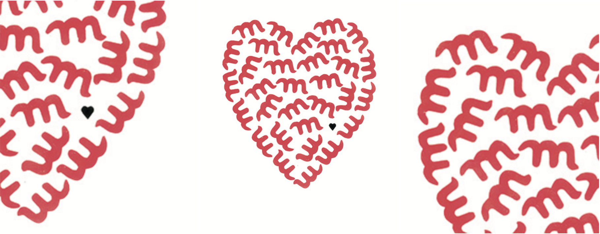

Ce projet est une création visuelle autour de la lettre M. Ici la lettre symbolise le mot "aime", phonétiquement symilaire.
J'ai donc créer un coeur, symbole premier de l'amour, constitué de lettres "m". Les lettres dansent ensembles.
L'ajout du coeur, rappelle le coeur, et l'idée principale du visuel.
Pour les couleurs, les lettres sont en rouges, pour la couleur symbolique de l'amour. Le coeur lui en noir rappelle l'encre.
Format A3
Acrylique/Collage
2018
 Retourner à l'acceuil